 <!DOCTYPE HTML>
<html lang="zh-CN">
<head><meta name="generator" content="Hexo 3.9.0">
  <meta charset="UTF-8">
  
    <title>内存基础 | CrayBlog</title>
    <meta name="viewport" content="width=device-width, initial-scale=1, maximum-scale=3, minimum-scale=1">
    
    <meta name="author" content="Cray">
    
    <meta name="description" content="原文地址
看点好玩的东西显然，并非每次应用程序崩溃都会导致漏洞利用。在许多情况下，应用程序崩溃不会导致利用…但有时它会。对于“exploitation”，我的意思是你希望应用程序做一些不打算做的事情……例如运行你自己的代码。使应用程序执行不应该执行的操作的最简单方法是控制其应用程序流（并将其重定向到">
    
    
    
    
    
    <link rel="icon" href="/img/favicon.ico">
    
    
    <link rel="apple-touch-icon" href="/img/pacman.jpg">
    <link rel="apple-touch-icon-precomposed" href="/img/pacman.jpg">
    
    <link rel="stylesheet" href="/css/style.css">
    <!-- Global site tag (gtag.js) - Google Analytics -->
    <script async src="https://www.googletagmanager.com/gtag/js?id=UA-146435492-1"></script>
    <script>
      window.dataLayer = window.dataLayer || [];
      function gtag(){dataLayer.push(arguments);}
      gtag('js', new Date());
      gtag('config', 'GA_MEASUREMENT_ID');
    </script>

</head>
</html>
  <body>
    <header>
      <div>
		
			<div id="imglogo">
				<a href="/"></a>
			</div>
			
			<div id="textlogo">
				<h1 class="site-name"><a href="/" title="CrayBlog">CrayBlog</a></h1>
				<h2 class="blog-motto"></h2>
			</div>
			<div class="navbar"><a class="navbutton navmobile" href="#" title="菜单">
			</a></div>
			<nav class="animated">
				<ul>
					
						<li><a href="/">Home</a></li>
					
						<li><a href="/archives">Archives</a></li>
					
					<li>
					
					<form class="search" action="//google.com/search" method="get" accept-charset="utf-8">
						<label>Search</label>
						<input type="text" id="search" name="q" autocomplete="off" maxlength="20" placeholder="搜索" />
						<input type="hidden" name="q" value="site:L0yy.github.io">
					</form>
					
					</li>
				</ul>
			</nav>			
</div>

    </header>
    <div id="container">
      <div id="main" class="post" itemscope itemprop="blogPost">
	<article itemprop="articleBody"> 
		<header class="article-info clearfix">
  <h1 itemprop="name">
    
      <a href="/2019/05/30/内存基础/" title="内存基础" itemprop="url">内存基础</a>
  </h1>
  <p class="article-author">By
    
      <a href="http://L0yy.github.io" title="Cray">Cray</a>
    </p>
  <p class="article-time">
    <time datetime="2019-05-30T00:41:45.000Z" itemprop="datePublished">2019-05-30</time>
    更新日期:<time datetime="2019-08-25T11:45:14.406Z" itemprop="dateModified">2019-08-25</time>
    
  </p>
</header>
	<div class="article-content">
		
		
		<div id="toc" class="toc-article">
			<strong class="toc-title">文章目录</strong>
		<ol class="toc"><li class="toc-item toc-level-2"><a class="toc-link" href="#看点好玩的东西"><span class="toc-number">1.</span> <span class="toc-text">看点好玩的东西</span></a></li><li class="toc-item toc-level-2"><a class="toc-link" href="#在我们开始之前-一些理论"><span class="toc-number">2.</span> <span class="toc-text">在我们开始之前 - 一些理论</span></a></li><li class="toc-item toc-level-2"><a class="toc-link" href="#进程内存"><span class="toc-number">3.</span> <span class="toc-text">进程内存</span></a></li><li class="toc-item toc-level-2"><a class="toc-link" href="#栈"><span class="toc-number">4.</span> <span class="toc-text">栈</span></a></li><li class="toc-item toc-level-2"><a class="toc-link" href="#调试器"><span class="toc-number">5.</span> <span class="toc-text">调试器</span></a></li><li class="toc-item toc-level-2"><a class="toc-link" href="#确定缓冲区大小以准确写入EIP"><span class="toc-number">6.</span> <span class="toc-text">确定缓冲区大小以准确写入EIP</span></a></li><li class="toc-item toc-level-2"><a class="toc-link" href="#查找写入shellcode的内存空间"><span class="toc-number">7.</span> <span class="toc-text">查找写入shellcode的内存空间</span></a></li></ol>
		</div>
		
		<p> <a href="https://www.corelan.be/index.php/2009/07/19/exploit-writing-tutorial-part-1-stack-based-overflows/" target="_blank" rel="noopener">原文地址</a></p>
<h2 id="看点好玩的东西"><a href="#看点好玩的东西" class="headerlink" title="看点好玩的东西"></a>看点好玩的东西</h2><p>显然，并非每次应用程序崩溃都会导致漏洞利用。在许多情况下，应用程序崩溃不会导致利用…但有时它会。对于“exploitation”，我的意思是你希望应用程序做一些不打算做的事情……例如运行你自己的代码。使应用程序执行不应该执行的操作的最简单方法是控制其应用程序流（并将其重定向到其他位置）。这可以通过控制指令指针（或程序计数器）来完成，指令指针是一个CPU寄存器，它包含一个指针，指向需要执行的下一条指令所在的位置。假设应用程序使用参数调用函数。在转到函数之前，它将当前位置保存在指令指针中（因此它知道函数完成时返回的位置）。如果您可以修改此指针中的值，并将其指向内存中包含您自己的代码段的位置，那么您可以更改应用程序流并使其执行不同的操作（除了返回到原始位置）。您希望在控制流后执行的代码通常称为“shellcode”。因此，如果我们让应用程序运行我们的shellcode，我们可以将其称为有效的漏洞。在大多数情况下，此指针由术语EIP引用。该寄存器大小为4个字节。因此，如果您可以修改这4个字节，那么您拥有应用程序（以及运行应用程序的计算机）</p>
<h2 id="在我们开始之前-一些理论"><a href="#在我们开始之前-一些理论" class="headerlink" title="在我们开始之前 - 一些理论"></a>在我们开始之前 - 一些理论</h2><ul>
<li><p>代码段（处理器执行的指令.EIP跟踪下一条指令）</p>
</li>
<li><p>数据段（变量，动态缓冲区）</p>
</li>
<li><p>堆栈段（用于将数据/参数传递给函数，并用作变量的空间。栈从页面虚拟内存的最末端开始（=栈的底部）并向下扩展（到较低的地址）<br>一个PUSH在栈顶部添加了一些东西，POP将从栈中删除一个项目（4个字节）并将其放入寄存器中。</p>
</li>
</ul>
<p><strong>如果要直接访问堆栈内存，可以使用ESP（堆栈指针），它指向堆栈的顶部（因此是最低的内存地址）</strong></p>
<ul>
<li><p><strong>在push之后</strong>，ESP将指向较低的存储器地址（地址随着被压入栈的数据的大小而递减，在地址/指针的情况下为4个字节）。递减通常发生在项目放置到栈之前（取决于实现…如果ESP已经指向栈中的下一个空闲位置，则在将数据放入堆栈之后发生减量）</p>
</li>
<li><p><strong>在POP之后</strong>，ESP指向更高的地址（地址递增（在地址/指针的情况下增加4个字节））。从栈中删除项目后发生增量。</p>
</li>
</ul>
<p><strong>输入函数/子例程时，将创建栈帧。此栈帧将父进程的参数保存在一起，并用于将参数传递给子进程。可以通过栈指针（ESP）访问栈的当前位置，该函数的当前栈基值在基指针（EBP）（或帧指针）中。</strong></p>
<p><strong><em>CPU 常见寄存器：</em></strong></p>
<ul>
<li>EAX：累加器：用于执行计算，并用于<strong>存储函数调用的返回值</strong>。加，减，比等基本运算使用这个通用寄存器</li>
<li>EBX：它没有通用性，可用于存储数据。</li>
<li>ECX：计数器：用于迭代。ECX向下计数。</li>
<li>EDX：数据：这是EAX寄存器的扩展。它允许存储额外的数据以便于进行这些计算，从而允许更复杂的计算（乘法，除法）。</li>
<li>ESP：栈指针，总是指向当前栈的最顶地址。</li>
<li>EBP：栈基指针，总是指向当前函数栈的最大地址</li>
<li>ESI：源索引：保存输入数据的位置</li>
<li>EDI：目标索引：指向存储数据操作结果的位置 <em>（ESI和EDI主要用于存放存储单元在段内的偏移量）</em></li>
<li>EIP：指令指针，指向CPU下一步要执行的语句</li>
</ul>
<h2 id="进程内存"><a href="#进程内存" class="headerlink" title="进程内存"></a>进程内存</h2><p>当应用程序在Win32环境中启动时，将创建一个进程并分配虚拟内存。在32位进程中，地址范围为0x00000000至0xFFFFFFFF，其中0x00000000至0x7FFFFFFF分配给user，0x80000000至0xFFFFFFFF分配给kernel。Windows，使用平面内存模型，这意味着CPU可以直接/顺序/线性地寻址所有可用的内存位置，而无需使用分段/分页方案。</p>
<p>内核地址只能被操作系统使用。</p>
<p>创建进程时，将创建PEB（进程环境块）和TEB（线程环境块）。</p>
<p><strong>PEB包含与当前进程关联的所有用户地址参数：</strong></p>
<ul>
<li>主可执行文件的位置</li>
<li>指向加载程序数据的指针（可用于列出/可以加载到进程中的所有dll /模块）</li>
<li>指向有关堆的信息的指针</li>
</ul>
<p><strong>TEB描述了线程的状态，并包括</strong></p>
<ul>
<li>PEB在内存中的位置</li>
<li>它所属线程的堆栈位置</li>
<li>指向SEH链中第一个条目的指针</li>
</ul>
<p>进程内的每个线程都有一个TEB。</p>
<p>Win32进程内存映射如下所示：<br>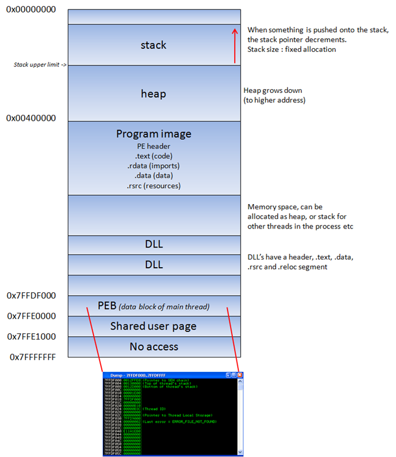</p>
<p>程序image / dll的文本段是只读的，因为它只包含应用程序代码。这可以防止人们修改应用程序代码。该内存段具有固定大小。数据段用于存储全局和静态程序变量。数据段用于初始化的全局变量，字符串和其他常量。数据段是可写的并且具有固定的大小。堆段用于其余的程序变量。它可以根据需要变大或变小。堆中的所有内存都由allocator（和deallocator）算法管理。这些算法保留了一个存储区域。<strong>堆将朝着高的地址增长</strong>。在dll中，代码，导入（dll使用的函数列表，来自另一个dll或应用程序）和导出（它使其他dll的应用程序可用的函数）都是代码段的一部分。</p>
<h2 id="栈"><a href="#栈" class="headerlink" title="栈"></a>栈</h2><p>堆栈是进程内存的一部分，一个工作LIFO的数据结构（后进先出）。操作系统为每个线程（创建线程时）分配栈。当线程结束时，栈也被清除。栈的大小在创建时定义，并且不会更改。结合LIFO以及不需要复杂的管理结构/机制来管理的事实，栈非常快，但是尺寸有限。</p>
<p>LIFO意味着最近放置的数据（PUSH指令的结果）是第一个将再次从栈中删除的数据。（通过POP指令）。</p>
<p>创建栈时，栈指针指向栈顶部（=栈中的最高地址）。当信息被压入栈时，该栈指针会递减（转到较低的地址）。所以从本质上讲，栈会增长到较低的地址。</p>
<p>栈包含局部变量，函数调用和其他不需要存储更长时间的信息。随着更多数据被添加到栈（压入栈），栈指针递减并指向较低的地址值。</p>
<p>每次调用函数时，函数参数都会被压入栈，以及寄存器的保存值（EBP，EIP）。当函数返回时，EIP的保存值从堆栈中检索并放回EIP中，因此可以恢复正常的应用程序流程。让我们使用几行简单的代码来演示行为：</p>
<p>让我们使用几行简单的代码来演示行为：</p>
<pre><code>#include  

void do_something(char *Buffer)
{
     char MyVar[128];
     strcpy(MyVar,Buffer);
}

int main (int argc, char **argv)
{
     do_something(argv[1]);
}</code></pre><p></p>
<p>这个应用程序接受一个参数（argv [1]并将参数传递给函数do_something（）。）在该函数中，参数被复制到一个最大为128个字节的局部变量中。所以…如果参数长于127个字节（一个空字节来终止字符串），缓冲区可能会溢出。</p>
<p>当从main（）内部调用函数“do_something（param1）”时，会发生以下情况：</p>
<p>将在“父”堆栈顶部创建一个新的堆栈帧。堆栈指针（ESP）指向新创建的堆栈的最高地址。这是“top of the stack”。</p>
<p>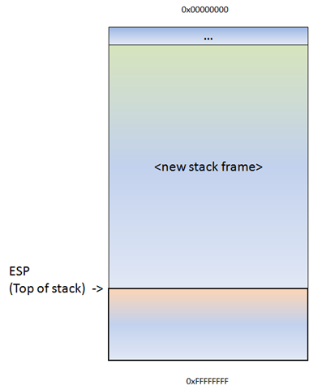</p>
<p>在调用do_something（）之前，指向参数的指针会被push到栈。在我们的例子中，这是一个指向argv [1]的指针。</p>
<p>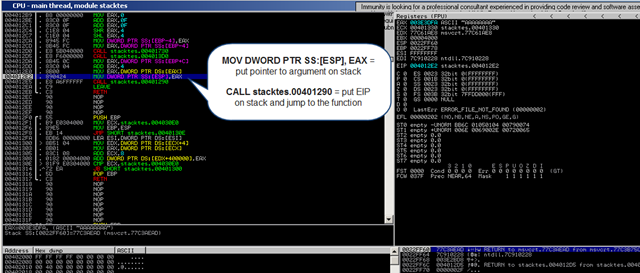</p>
<p>MOV指令后栈：</p>
<p>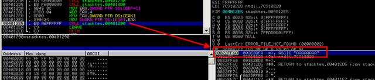</p>
<p>然后，函数do_something被调用。会将主函数CALL指令的下一指令地址放到栈上（因此它是子函数返回的位置），然后跳转到功能代码。</p>
<p>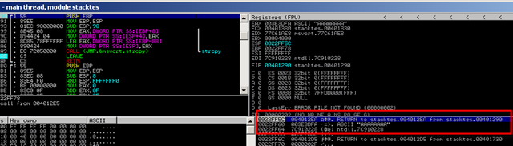</p>
<p>push的结果，ESP递减4个字节，现在指向较低的地址。<br>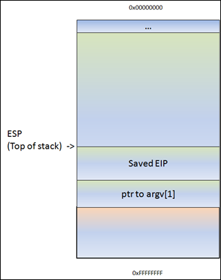</p>
<p>（或者，如在调试器中看到的）：ESP指向0022FF5C。在这个地址，我们看到保存的EIP（返回…），然后是指向参数的指针（本例中为AAAA）。在执行CALL指令之前，该指针已保存在堆栈中。</p>
<p>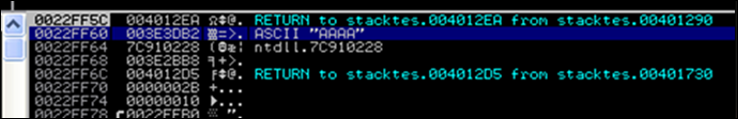</p>
<p>接下来，被调用函数开始执行。先将将父函数栈基指针（EBP）保存到栈中，因此当函数返回时也可以恢复它。保存父函数栈基指针的指令是“push ebp”。ESP再次以4个字节递减。</p>
<p>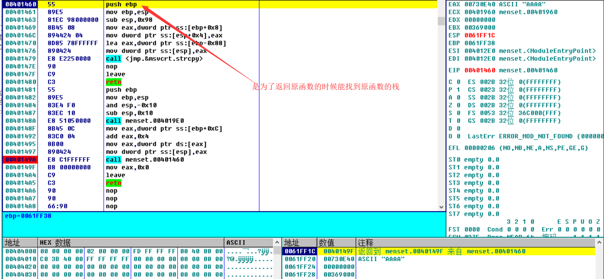<br>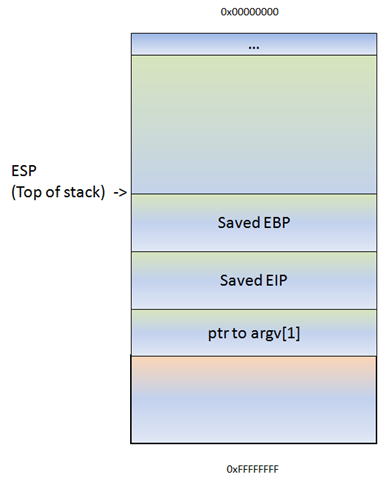</p>
<p>在push ebp之后，当前栈指针（ESP）被置于EBP中。此时，ESP和EBP都指向当前栈的顶部。从那时起，栈通常由ESP（任何时候栈的顶部）和EBP（当前栈基指针）引用。这样，应用程序可以通过使用EBP的偏移量来引用变量。</p>
<blockquote>
<p>Most functions start with this sequence :  PUSH EBP, followed by MOV EBP,ESP</p>
</blockquote>
<p>因此，如果您将4个字节push到栈，ESP将减少4个字节，EBP仍将保持原样。然后，您可以使用EBP-0x4引用这4个字节。</p>
<p>接下来，我们可以看到如何声明/分配变量MyVar（128bytes）的栈空间。为了保存数据，在栈上分配一些空间来保存此变量中的数据…… ESP减少了多个字节。由于编译器确定的分配例程，这个字节数很可能超过128个字节。在Dev-C ++的情况下，这是0x98字节。所以你会看到SUB ESP，0x98指令。这样，这个变量就有空间可用。</p>
<p>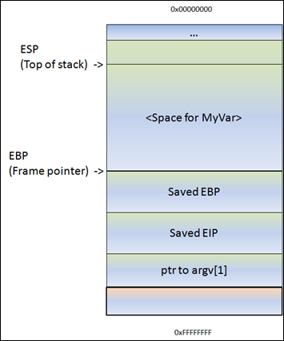</p>
<p><strong>子函数汇编码：</strong></p>
<pre><code>00401290  /$ 55             PUSH EBP
00401291  |. 89E5           MOV EBP,ESP
00401293  |. 81EC 98000000  SUB ESP,98
00401299  |. 8B45 08        MOV EAX,DWORD PTR SS:[EBP+8]             ; |
0040129C  |. 894424 04      MOV DWORD PTR SS:[ESP+4],EAX             ; |
004012A0  |. 8D85 78FFFFFF  LEA EAX,DWORD PTR SS:[EBP-88]            ; |
004012A6  |. 890424         MOV DWORD PTR SS:[ESP],EAX               ; |
004012A9  |. E8 72050000    CALL                 ; \strcpy
004012AE  |. C9             LEAVE
004012AF  \. C3             RETN</code></pre><p>（不要太担心代码。你可以清楚地看到函数序列（PUSH EBP和MOV EBP，ESP），你也可以看到为MyVar分配空间的位置（SUB ESP，98），你可以看到一些MOV和LEA指令（基本上设置了strcpy函数的参数……将指针放在argv [1]所在位置并使用它将数据复制到MyVar中。</p>
<p>如果此函数中没有strcpy（），则该函数现在将结束并“unwind”栈。基本上，它只会将ESP移回到保存EIP的位置，然后发出RET指令。在这种情况下，ret将从栈中拾取保存的EIP指针并跳转到它。（因此，它会在调用do_something（）之后返回main函数）。最后指令由LEAVE指令执行（它将恢复帧指针和EIP）。</p>
<blockquote>
<p>leave在32位汇编下相当于:<code>mov esp,ebp | pop ebp</code></p>
<p>leave指令将EBP寄存器的内容复制到ESP寄存器中，<br>以释放分配给该过程的所有堆栈空间。然后，它从堆栈恢复EBP寄存器的旧值。</p>
</blockquote>
<p>在这个的例子中，我们有一个strcpy（）函数。</p>
<p>此函数将从[<code>Buffer</code>]指向的地址读取数据并将其存储，读取所有数据，直到看到空字节（字符串终止符）。当它复制数据时，ESP就会保持原样。strcpy（）不使用PUSH指令将数据放入堆栈……它基本上读取一个字节并使用索引将其写入堆栈（例如ESP，ESP + 1，ESP + 2等）。所以在复制之后，ESP仍然指向字符串的开头。</p>
<p>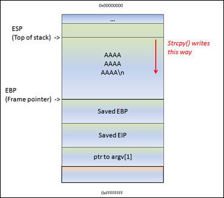</p>
<p>这意味着……如果[<code>Buffer</code>]中的数据略长于0x98字节，strcpy（）将覆盖已保存的EBP并最终保存EIP（依此类推）。毕竟，它只是继续读写，直到它到达源位置的空字节（如果是字符串）</p>
<p>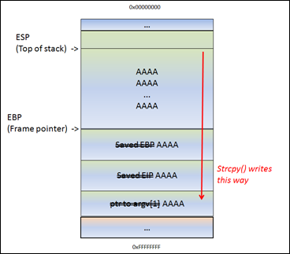</p>
<p>ESP仍然指向字符串的开头。strcpy（）完成就好没有错。在strcpy（）之后，函数结束。这就是事情变得有趣的地方。函数结束处理启动。基本上，它会将ESP移回存储EIP的位置，它将发出RET。它将采用指针（在我们的情况下为AAAA或0x41414141，因为它被覆盖），并将跳转到该地址。</p>
<p>所以你控制EIP。</p>
<p>简而言之，通过控制EIP，您可以更改函数返回值来“恢复正常流量”。</p>
<p>当然，如果通过发出缓冲区溢出来更改此返回地址，则不再是“正常流程”。</p>
<p>所以…假设您可以覆盖MyVar，EBP，EIP中的缓冲区，并且在保存的EIP之前和之后您拥有A（您自己的代码）…想一想。发送缓冲区（[MyVar] [EBP] [EIP] [your_code]）后，ESP将/应指向[your_code]的开头。因此，如果您可以使EIP转到您的代码，那么您就可以控制。</p>
<blockquote>
<p>注意：当栈上的缓冲区溢出时，使用术语“基于栈的溢出”或“栈缓冲区溢出”。当您尝试写入栈帧的末尾时，将使用术语“栈溢出”。不要混淆这两者，因为它们完全不同。</p>
</blockquote>
<h2 id="调试器"><a href="#调试器" class="headerlink" title="调试器"></a>调试器</h2><p>为了查看堆栈的状态（以及寄存器的值，如指令指针，堆栈指针等），我们需要将调试器连接到应用程序，这样我们就可以看到应用程序运行时会发生什么（特别是当它dies时）。</p>
<p>有许多调试器可用于此目的。我经常使用的两个调试器是 Windbg.olldbg.Immunity 的调试器</p>
<p>下面是windbg调试器</p>
<p>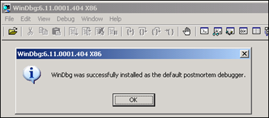</p>
<p>您还可以通过设置以下注册表项来禁用“xxxx遇到问题并需要关闭”弹出窗口：HKLM \ Software \ Microsoft \ Windows NT \ CurrentVersion \ AeDebug \ Auto：设置为0</p>
<p>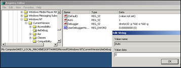</p>
<p>为了避免Windbg抱怨找不到符号文件，请在硬盘上创建一个文件夹（比方说c：\ windbgsymbols）。然后，在Windbg中，转到“文件” - “符号文件路径”并输入以下字符串：</p>
<p><code>SRV*C:\windbgsymbols*http://msdl.microsoft.com/download/symbols</code></p>
<p><strong>(不要在这个字符串后面加一个空行！确保此字符串是符号路径字段中唯一的字符串)</strong></p>
<blockquote>
<p>在继续之前的快速说明：在intel x86上，地址存储为little-endian（向后）。您看到的AAAA实际上是AAAA :-)（或者，如果您已在缓冲区中发送ABCD，则EIP将指向44434241（DCBA）</p>
</blockquote>
<h2 id="确定缓冲区大小以准确写入EIP"><a href="#确定缓冲区大小以准确写入EIP" class="headerlink" title="确定缓冲区大小以准确写入EIP"></a>确定缓冲区大小以准确写入EIP</h2><p>我们知道EIP位于缓冲区开头的20000到30000字节之间。现在，您可能会使用要覆盖EIP的地址覆盖20000到30000字节之间的所有内存空间。这可能有效，但如果您能找到执行覆盖的确切位置，它看起来会更好。为了确定缓冲区中EIP的确切偏移量，我们需要做一些额外的工作。</p>
<p>首先，让我们尝试通过稍微改变我们的perl脚本来缩小位置：</p>
<p>让我们减少一半。我们将创建一个包含25000个A和另外5000个B的文件。如果EIP包含41414141（AAAA），则EIP位于20000和25000之间，如果EIP包含42424242（BBBB），则EIP位于25000和30000之间。</p>
<pre><code>my $file= &quot;crash25000.m3u&quot;;
my $junk = &quot;\x41&quot; x 25000;
my $junk2 = &quot;\x42&quot; x 5000;
open($FILE,&quot;&gt;$file&quot;);
print $FILE $junk.$junk2;
close($FILE);
print &quot;m3u File Created successfully\n&quot;;</code></pre><p>创建文件并在Easy RM中打开crash25000.m3u到MP3。</p>
<p>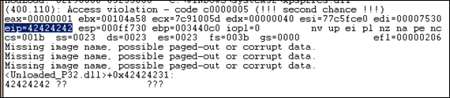</p>
<p>好的，所以eip包含42424242（BBBB），所以我们知道EIP的偏移量在25000到30000之间。这也意味着我们应该/可能会看到ESP指向的内存中剩余的B（假设EIP在结束前被覆盖）30000字符缓冲区）</p>
<p>转储ESP的内容：</p>
<pre><code>0:000&gt; d esp
000ff730  42 42 42 42 42 42 42 42-42 42 42 42 42 42 42 42  BBBBBBBBBBBBBBBB
000ff740  42 42 42 42 42 42 42 42-42 42 42 42 42 42 42 42  BBBBBBBBBBBBBBBB
000ff750  42 42 42 42 42 42 42 42-42 42 42 42 42 42 42 42  BBBBBBBBBBBBBBBB
000ff760  42 42 42 42 42 42 42 42-42 42 42 42 42 42 42 42  BBBBBBBBBBBBBBBB
000ff770  42 42 42 42 42 42 42 42-42 42 42 42 42 42 42 42  BBBBBBBBBBBBBBBB
000ff780  42 42 42 42 42 42 42 42-42 42 42 42 42 42 42 42  BBBBBBBBBBBBBBBB
000ff790  42 42 42 42 42 42 42 42-42 42 42 42 42 42 42 42  BBBBBBBBBBBBBBBB
000ff7a0  42 42 42 42 42 42 42 42-42 42 42 42 42 42 42 42  BBBBBBBBBBBBBBBB
0:000&gt; d
000ff7b0  42 42 42 42 42 42 42 42-42 42 42 42 42 42 42 42  BBBBBBBBBBBBBBBB
000ff7c0  42 42 42 42 42 42 42 42-42 42 42 42 42 42 42 42  BBBBBBBBBBBBBBBB
000ff7d0  42 42 42 42 42 42 42 42-42 42 42 42 42 42 42 42  BBBBBBBBBBBBBBBB
000ff7e0  42 42 42 42 42 42 42 42-42 42 42 42 42 42 42 42  BBBBBBBBBBBBBBBB
000ff7f0  42 42 42 42 42 42 42 42-42 42 42 42 42 42 42 42  BBBBBBBBBBBBBBBB
000ff800  42 42 42 42 42 42 42 42-42 42 42 42 42 42 42 42  BBBBBBBBBBBBBBBB
000ff810  42 42 42 42 42 42 42 42-42 42 42 42 42 42 42 42  BBBBBBBBBBBBBBBB
000ff820  42 42 42 42 42 42 42 42-42 42 42 42 42 42 42 42  BBBBBBBBBBBBBBBB
0:000&gt; d
000ff830  42 42 42 42 42 42 42 42-42 42 42 42 42 42 42 42  BBBBBBBBBBBBBBBB
000ff840  42 42 42 42 42 42 42 42-42 42 42 42 42 42 42 42  BBBBBBBBBBBBBBBB
000ff850  42 42 42 42 42 42 42 42-42 42 42 42 42 42 42 42  BBBBBBBBBBBBBBBB
000ff860  42 42 42 42 42 42 42 42-42 42 42 42 42 42 42 42  BBBBBBBBBBBBBBBB
000ff870  42 42 42 42 42 42 42 42-42 42 42 42 42 42 42 42  BBBBBBBBBBBBBBBB
000ff880  42 42 42 42 42 42 42 42-42 42 42 42 42 42 42 42  BBBBBBBBBBBBBBBB
000ff890  42 42 42 42 42 42 42 42-42 42 42 42 42 42 42 42  BBBBBBBBBBBBBBBB
000ff8a0  42 42 42 42 42 42 42 42-42 42 42 42 42 42 42 42  BBBBBBBBBBBBBBBB</code></pre><p>但是这样来计算是不是太麻烦了呢，所以我们找个小工具来定位溢出点</p>
<p><code>gdb-peda</code>  这个插件需安装</p>
<pre><code>git clone https://github.com/longld/peda.git ~/peda
echo &quot;source ~/peda/peda.py&quot; &gt;&gt; ~/.gdbinit </code></pre><p>下面是基本使用</p>
<pre><code>gdb
pattern_creat 5000 patter5000.txt #生成一个5000字节的测试字符到一个文本里</code></pre><p>原文后面就基本是例子演示，建议直接看原文</p>
<h2 id="查找写入shellcode的内存空间"><a href="#查找写入shellcode的内存空间" class="headerlink" title="查找写入shellcode的内存空间"></a>查找写入shellcode的内存空间</h2><p>我们控制EIP。因此，我们可以将EIP指向其他地方，包含我们自己的代码（shellcode）。但是这个空间在哪里，我们如何将我们的shellcode放在那个位置？我们如何让EIP跳转到那个位置？为了使应用程序崩溃，我们已经将26094 A写入内存，我们已经在保存的EIP字段（ret）中写入了一个新值，并且我们编写了一堆C语言。当应用程序崩溃时，请查看寄存器并转储所有寄存器（d esp，d eax，d ebx，d ebp，…）。如果你可以在其中一个寄存器中看到你的缓冲区（A或C），那么你可以用shellcode替换它们并跳转到那个位置。在我们的例子中，我们可以看到ESP似乎指向我们的C（记住上面的es esp的输出），所以理想情况下我们会把我们的shellcode而不是C，我们告诉EIP去ESP地址。尽管事实上我们可以看到C，但我们并不确定第一个C（地址为000ff730，ESP指向的地方）实际上是我们放入缓冲区的第一个C.我们将更改perl脚本并提供一个字符模式（我已经占用了144个字符，但你可以花费更多或更少）而不是C：</p>
  
	</div>
		<footer class="article-footer clearfix">

  <div class="article-tags">
  
  <span></span> <a href="/tags/内存/">内存</a><a href="/tags/溢出/">溢出</a><a href="/tags/栈/">栈</a>
  </div>


<div class="article-categories">
  <span></span>
  <a class="article-category-link" href="/categories/逆向/">逆向</a>
</div>


<div class="article-share" id="share">

  <div data-url="http://L0yy.github.io/2019/05/30/内存基础/" data-title="内存基础 | CrayBlog" data-tsina="" class="share clearfix">
  </div>

</div>
</footer>   	       
	</article>
	
<nav class="article-nav clearfix">
 
 <div class="prev" >
 <a href="/2019/06/03/silky：0x02靶机总结/" title="silky：0x02靶机总结">
  <strong>PREVIOUS:</strong><br/>
  <span>
  silky：0x02靶机总结</span>
</a>
</div>


<div class="next">
<a href="/2019/05/14/TCP总结/"  title="TCP总结">
 <strong>NEXT:</strong><br/> 
 <span>TCP总结
</span>
</a>
</div>

</nav>

	
</div>  
      <div class="openaside"><a class="navbutton" href="#" title="显示侧边栏"></a></div>

  <div id="toc" class="toc-aside">
  <strong class="toc-title">文章目录</strong>
  <ol class="toc"><li class="toc-item toc-level-2"><a class="toc-link" href="#看点好玩的东西"><span class="toc-number">1.</span> <span class="toc-text">看点好玩的东西</span></a></li><li class="toc-item toc-level-2"><a class="toc-link" href="#在我们开始之前-一些理论"><span class="toc-number">2.</span> <span class="toc-text">在我们开始之前 - 一些理论</span></a></li><li class="toc-item toc-level-2"><a class="toc-link" href="#进程内存"><span class="toc-number">3.</span> <span class="toc-text">进程内存</span></a></li><li class="toc-item toc-level-2"><a class="toc-link" href="#栈"><span class="toc-number">4.</span> <span class="toc-text">栈</span></a></li><li class="toc-item toc-level-2"><a class="toc-link" href="#调试器"><span class="toc-number">5.</span> <span class="toc-text">调试器</span></a></li><li class="toc-item toc-level-2"><a class="toc-link" href="#确定缓冲区大小以准确写入EIP"><span class="toc-number">6.</span> <span class="toc-text">确定缓冲区大小以准确写入EIP</span></a></li><li class="toc-item toc-level-2"><a class="toc-link" href="#查找写入shellcode的内存空间"><span class="toc-number">7.</span> <span class="toc-text">查找写入shellcode的内存空间</span></a></li></ol>
  </div>

<div id="asidepart">
<div class="closeaside"><a class="closebutton" href="#" title="隐藏侧边栏"></a></div>
<aside class="clearfix">

  
<div class="categorieslist">
	<p class="asidetitle">分类</p>
		<ul>
		
			<li><a href="/categories/CTF/" title="CTF">CTF<sup>7</sup></a></li>
		
			<li><a href="/categories/Docker/" title="Docker">Docker<sup>1</sup></a></li>
		
			<li><a href="/categories/Git/" title="Git">Git<sup>1</sup></a></li>
		
			<li><a href="/categories/docker/" title="docker">docker<sup>1</sup></a></li>
		
			<li><a href="/categories/博客/" title="博客">博客<sup>2</sup></a></li>
		
			<li><a href="/categories/编程/" title="编程">编程<sup>3</sup></a></li>
		
			<li><a href="/categories/课堂学习/" title="课堂学习">课堂学习<sup>1</sup></a></li>
		
			<li><a href="/categories/课堂笔记/" title="课堂笔记">课堂笔记<sup>9</sup></a></li>
		
			<li><a href="/categories/逆向/" title="逆向">逆向<sup>10</sup></a></li>
		
		</ul>
</div>


  
<div class="tagslist">
	<p class="asidetitle">标签</p>
		<ul class="clearfix">
		
			<li><a href="/tags/Angr/" title="Angr">Angr<sup>1</sup></a></li>
		
			<li><a href="/tags/DVWA/" title="DVWA">DVWA<sup>2</sup></a></li>
		
			<li><a href="/tags/GCC/" title="GCC">GCC<sup>1</sup></a></li>
		
			<li><a href="/tags/HCIP/" title="HCIP">HCIP<sup>2</sup></a></li>
		
			<li><a href="/tags/IDA/" title="IDA">IDA<sup>2</sup></a></li>
		
			<li><a href="/tags/OD/" title="OD">OD<sup>1</sup></a></li>
		
			<li><a href="/tags/PE/" title="PE">PE<sup>1</sup></a></li>
		
			<li><a href="/tags/Python/" title="Python">Python<sup>1</sup></a></li>
		
			<li><a href="/tags/SEH/" title="SEH">SEH<sup>1</sup></a></li>
		
			<li><a href="/tags/SQL注入/" title="SQL注入">SQL注入<sup>1</sup></a></li>
		
			<li><a href="/tags/TCP/" title="TCP">TCP<sup>1</sup></a></li>
		
			<li><a href="/tags/TcpDump/" title="TcpDump">TcpDump<sup>1</sup></a></li>
		
			<li><a href="/tags/Win32/" title="Win32">Win32<sup>1</sup></a></li>
		
			<li><a href="/tags/Windbg/" title="Windbg">Windbg<sup>1</sup></a></li>
		
			<li><a href="/tags/coding/" title="coding">coding<sup>1</sup></a></li>
		
			<li><a href="/tags/dll/" title="dll">dll<sup>1</sup></a></li>
		
			<li><a href="/tags/docker/" title="docker">docker<sup>1</sup></a></li>
		
			<li><a href="/tags/github/" title="github">github<sup>1</sup></a></li>
		
			<li><a href="/tags/git密钥生成以及安装/" title="git密钥生成以及安装">git密钥生成以及安装<sup>1</sup></a></li>
		
			<li><a href="/tags/hexo/" title="hexo">hexo<sup>2</sup></a></li>
		
		</ul>
</div>


</aside>
</div>
    </div>
    <footer><div id="footer" >
	
	<div class="line">
		<span></span>
		<div class="author"></div>
	</div>
	
	
	<div class="social-font clearfix">
		
		
		
		
		
	</div>
		<p class="copyright">Powered by <a href="http://hexo.io" target="_blank" title="hexo">hexo</a> and Theme by <a href="https://github.com/A-limon/pacman" target="_blank" title="Pacman">Pacman</a> © 2019 
		
		<a href="http://L0yy.github.io" target="_blank" title="Cray">Cray</a>
		
		</p>
</div>
</footer>
    <script src="/js/jquery-2.1.0.min.js"></script>
<script type="text/javascript">
$(document).ready(function(){ 
  $('.navbar').click(function(){
    $('header nav').toggleClass('shownav');
  });
  var myWidth = 0;
  function getSize(){
    if( typeof( window.innerWidth ) == 'number' ) {
      myWidth = window.innerWidth;
    } else if( document.documentElement && document.documentElement.clientWidth) {
      myWidth = document.documentElement.clientWidth;
    };
  };
  var m = $('#main'),
      a = $('#asidepart'),
      c = $('.closeaside'),
      o = $('.openaside');
  $(window).resize(function(){
    getSize(); 
    if (myWidth >= 1024) {
      $('header nav').removeClass('shownav');
    }else
    {
      m.removeClass('moveMain');
      a.css('display', 'block').removeClass('fadeOut');
      o.css('display', 'none');
      
      $('#toc.toc-aside').css('display', 'none');
        
    }
  });
  c.click(function(){
    a.addClass('fadeOut').css('display', 'none');
    o.css('display', 'block').addClass('fadeIn');
    m.addClass('moveMain');
  });
  o.click(function(){
    o.css('display', 'none').removeClass('beforeFadeIn');
    a.css('display', 'block').removeClass('fadeOut').addClass('fadeIn');      
    m.removeClass('moveMain');
  });
  $(window).scroll(function(){
    o.css("top",Math.max(80,260-$(this).scrollTop()));
  });
});
</script>

<script type="text/javascript">
$(document).ready(function(){ 
  var ai = $('.article-content>iframe'),
      ae = $('.article-content>embed'),
      t  = $('#toc'),
      h  = $('article h2')
      ah = $('article h2'),
      ta = $('#toc.toc-aside'),
      o  = $('.openaside'),
      c  = $('.closeaside');
  if(ai.length>0){
    ai.wrap('<div class="video-container" />');
  };
  if(ae.length>0){
   ae.wrap('<div class="video-container" />');
  };
  if(ah.length==0){
    t.css('display','none');
  }else{
    c.click(function(){
      ta.css('display', 'block').addClass('fadeIn');
    });
    o.click(function(){
      ta.css('display', 'none');
    });
    $(window).scroll(function(){
      ta.css("top",Math.max(140,320-$(this).scrollTop()));
    });
  };
});
</script>


<script type="text/javascript">
$(document).ready(function(){ 
  var $this = $('.share'),
      url = $this.attr('data-url'),
      encodedUrl = encodeURIComponent(url),
      title = $this.attr('data-title'),
      tsina = $this.attr('data-tsina');
  var html = [
  '<a href="#" class="overlay" id="qrcode"></a>',
  '<div class="qrcode clearfix"><span>扫描二维码分享到微信朋友圈</span><a class="qrclose" href="#share"></a><strong>Loading...Please wait</strong></div>',
  '<a href="#textlogo" class="article-back-to-top" title="Top"></a>',
  '<a href="https://www.facebook.com/sharer.php?u=' + encodedUrl + '" class="article-share-facebook" target="_blank" title="Facebook"></a>',
  '<a href="#qrcode" class="article-share-qrcode" title="QRcode"></a>',
  '<a href="https://twitter.com/intent/tweet?url=' + encodedUrl + '" class="article-share-twitter" target="_blank" title="Twitter"></a>',
  '<a href="http://service.weibo.com/share/share.php?title='+title+'&url='+encodedUrl +'&ralateUid='+ tsina +'&searchPic=true&style=number' +'" class="article-share-weibo" target="_blank" title="Weibo"></a>',
  '<span title="Share to"></span>'
  ].join('');
  $this.append(html);
  $('.article-share-qrcode').click(function(){
    var imgSrc = $('#qrcode-pic').attr('data-src');
    $('#qrcode-pic').attr('src', imgSrc);
    $('#qrcode-pic').load(function(){
        $('.qrcode strong').text(' ');
    });
  });
});     
</script>


<script type="text/javascript">
(function(i,s,o,g,r,a,m){i['GoogleAnalyticsObject']=r;i[r]=i[r]||function(){
  (i[r].q=i[r].q||[]).push(arguments)},i[r].l=1*new Date();a=s.createElement(o),
  m=s.getElementsByTagName(o)[0];a.async=1;a.src=g;m.parentNode.insertBefore(a,m)
})(window,document,'script','//www.google-analytics.com/analytics.js','ga');
ga('create', 'UA-146435492-1', 'l0yy.github.io');  
ga('send', 'pageview');
</script>


  </body>
</html>
